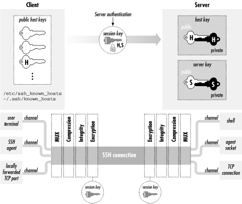

|  |
3.4. Inside SSH-1
Now that we've seen the major features and components of SSH, let's delve into the details of the SSH-1 protocol. SSH-2 is covered separately. [Section 3.5, "Inside SSH-2"] The architecture of SSH-1 is summarized in Figure 3-2. We will cover:- How the secure session is established
- Authentication by password, public key, or trusted host
- Integrity checking
Data compression

Figure 3-2. SSH-1 architecture
3.4.1. Establishing the Secure Connection
Before meaningful interaction can take place, the SSH client and server must establish a secure connection. This lets them share keys, passwords, and ultimately, whatever data they transmit to each other. We will now explain how the SSH-1 protocol guarantees security of a network connection. Through a multistep process, starting from scratch, the SSH-1 client and server agree on an encryption algorithm and generate and share a secret session key, establishing a secure connection:- The client contacts the server.
- The client and server disclose the SSH protocol versions they support.
- The client and server switch to a packet-based protocol.
- The server identifies itself to the client and provides session parameters.
- The client sends the server a secret (session) key.
- Both sides turn on encryption and complete server authentication.
- The secure connection is established.
Figure 3-3. SSH-1 protocol exchange
- The client contacts the server. This is done without fanfare, simply by sending a connection request to the server's TCP port, which is port 22 by convention.
- The client and server disclose the SSH protocol versions
they support.
These protocols are represented as ASCII
strings, such as
"SSH-1.5-1.2.27", which means SSH protocol Version 1.5 as
implemented by SSH1 Version 1.2.27. You can see this string by
connecting to an SSH server port with a Telnet client:
The implementation version (1.2.27) is just a comment and is optional in the string. But, some implementations examine the comment to recognize particular software versions and work around known bugs or incompatibilities.[19]$ telnet server 22 Trying 192.168.10.1 Connected to server (192.168.10.1). Escape character is '^]'. SSH-1.5-1.2.27
[19]Some system administrators remove the comment, preferring not to announce their software package and version to the world, which provides clues to an attacker.
If the client and server decide their versions are compatible, the connection process continues; otherwise either party may decide to terminate the connection. For instance, if an SSH-1-only client encounters an SSH-2-only server, the client disconnects and prints an error message. Other actions are possible: for example, the SSH-2-only server can invoke an SSH-1 server to handle the connection. - The client and server switch to a packet-based protocol. Once the protocol version exchange is complete, both sides switch to a packet-based protocol over the underlying TCP connection. Each packet consists of a 32-bit length field, 1- 8 bytes of random padding to foil known-plaintext attacks, a one-byte packet type code, the packet payload data, and a four-byte integrity check field.
- The server identifies itself to the client and provides
session parameters.
The server sends the following information to the client (all still
unencrypted):
- Its host key, used to prove the server host identity later.
- Its server key, which helps establish the secure connection.
- A sequence of eight random bytes, called check bytes. The client must include these check bytes in its next response, or the server rejects the response. This measure protects against some IP spoofing attacks.
- Lists of encryption, compression, and authentication methods that the server supports.
- The client sends the server a secret (session) key. Now the client randomly generates a new key for a bulk cipher [Section 3.2.2, "Public- and Secret-Key Cryptography"] that both client and server support; this is called the session key. Its purpose is to encrypt and decrypt messages sent between the client and the server. All that's needed is to give this session key to the server, and both sides can turn on encryption and begin communicating securely. Of course, the client can't simply send the session key to the server. Encryption isn't operating yet, and if a third party intercepts this key, it can decrypt the client's and server's messages. Goodbye security! So the client must send the session key securely. This is done by encrypting it twice: once with the server's public host key and once with the server key. This step ensures that only the server can read it. After the session key is double-encrypted, the client sends it to the server, along with the check bytes and a choice of algorithms (picked from the server's list of supported algorithms sent in Step 4.
- Both sides turn on encryption and complete server authentication. After sending the session key, both sides begin encrypting the session data with the key and the selected bulk cipher. Before sending anything further, though, the client waits for a confirmation message from the server, which (like all subsequent data) must be encrypted with the session key. This final step provides the server authentication: only the intended server can have decrypted the session key, since it was encrypted with the host key verified earlier against the known hosts list. Without the session key, an impostor server can't decrypt the subsequent protocol traffic or produce valid traffic in return, and the client will notice and terminate the connection. Note that server authentication is implicit; there's no explicit exchange to verify the server host key. Therefore it's important for the client to wait for a valid server response using the new session key before sending anything further, in order to verify the server's identity before proceeding. The SSH-1 protocol isn't specific about this point, but SSH-2 requires it when server authentication is implicit in the session key exchange. Encrypting the session key a second time with the server key provides a property called perfect forward secrecy. This means there are no persistent keys lying around whose disclosure can jeopardize the secrecy of past or future SSH sessions. If the server host key alone is used to protect the session key, then disclosure of the host private key compromises future communications and allows decryption of old, recorded sessions. Using the server key in tandem for this purpose removes this weakness, as it is temporary, never explicitly stored on disk, and replaced periodically (by default, once an hour). Having stolen the server private key, an interloper must still perform an active man-in-the-middle or server spoofing attack to compromise a session.
- The secure connection is established. Since both the client and server now know the session key, and nobody else does, they can send each other encrypted messages (using the bulk cipher they agreed on) only they can decrypt. Also, the client has completed server authentication. We're ready to begin client authentication.
3.4.2. Client Authentication
Once the secure connection is established, the client attempts to authenticate itself to the server. The client may try any authentication methods at its disposal until one succeeds, or all have failed. For example, the six authentication methods defined by the SSH-1.5 protocol, in the order attempted by the SSH1 implementation, are:- Kerberos[20]
[20]This method isn't available by default; it must be requested at compile time.
- Rhosts
- RhostsRSA
- Public-key
- TIS[20]
- Password (flavors: host login password, Kerberos, SecurID, S/Key, etc.)
- Public-key
- Password
3.4.2.1. Password authentication
During password authentication, the user supplies a password to the SSH client, which the client transmits securely to the server over the encrypted connection. The server then checks that the given password is acceptable for the target account, and allows the connection if so. In the simplest case, the SSH server checks this through the native password-authentication mechanism of the host operating system. Password authentication is quite convenient because it requires no additional setup for the user. You don't need to generate a key, create a ~/.ssh directory on the server machine, or edit any configuration files. This is particularly convenient for first-time SSH users and for users who travel a lot and don't carry their private keys. You might not want to use your private keys on other machines, or there may be no way to get them onto the machine in question. If you frequently travel, you should consider setting up SSH to use one-time passwords if your implementation supports them, improving the security of the password scheme. [Section 3.4.2.5, "One-time passwords"] On the other hand, password authentication is inconvenient because you have to type a password every time you connect. Also, password authentication is less secure than public-key because the sensitive password is transmitted off the client host. It is protected from snooping while on the network but is vulnerable to capture once it arrives at the server if that machine has been compromised. This is in contrast with public-key authentication, as even a compromised server can't learn your private key through the protocol. Therefore, before choosing password authentication, you should weigh the trustworthiness of the client and the server, as you will be revealing to them the key to your electronic kingdom. Password authentication is simple in concept, but different Unix variants store and verify passwords in different ways, leading to some complexities. OpenSSH uses PAM for password authentication by default, which must be carefully configured. [Section 4.3, "OpenSSH"] Most Unix systems encrypt passwords with DES (via the crypt( ) library routine), but recently some systems have started using the MD5 hash algorithm, leading to configuration issues. [Section 4.3, "OpenSSH"] The behavior of password authentication also changes if Kerberos [Section 5.5.1.7, "Kerberos authentication"] or SecurID support [Section 5.5.1.9, "SecurID authentication"] is enabled in the SSH server.3.4.2.2. Public-key authentication
Public-key authentication uses public-key cryptography to verify the client's identity. To access an account on an SSH server machine, the client proves that it possesses a secret: specifically, the private counterpart of an authorized public key. A key is "authorized" if its public component is contained in the account's authorization file (e.g., ~/.ssh/authorized_keys). The sequence of actions is:- The client sends the server a request for public-key authentication
with a particular key. The request contains the key's modulus
as an identifier.[21]
[21]An RSA key consists of two parts: the exponent and the modulus. The modulus is the long number in the public key (.pub) file.
The key is implicitly RSA; the SSH-1 protocol specifies the RSA algorithm particularly and exclusively for public-key operations. - The server reads the target account's authorization file, and looks for an entry with the matching key. If there is no matching entry, this authentication request fails.
- If there is a matching entry, the server retrieves the key and notes any restrictions on its use. The server can then reject the request immediately on the basis of a restriction, for example, if the key shouldn't be used from the client host. Otherwise, the process continues.
- The server generates a random 256-bit string as a challenge, encrypts it with the client's public key, and sends this to the client.
- The client receives the challenge and decrypts it with the
corresponding private key. It then combines the challenge with the
session identifier, hashes the result with MD5, and returns the hash
value to the server as its response to the challenge. The session
identifier is mixed in to bind the authenticator to the current
session, protecting against replay attacks taking advantage of weak
or compromised random-number generation in creating the challenge.
The hashing operation is there to prevent misuse of the
client's private key via the protocol, including a
chosen-plaintext attack.[22] If the client simply returns the decrypted challenge
instead, a corrupt server can present any data encrypted with the
client's public key, and the unsuspecting client dutifully
decrypts and returns it. It might be the data-encryption key for an
enciphered email message the attacker intercepted. Also, remember
that with RSA, "decrypting" some data with the private
key is actually the same operation as "signing" it. So
the server can supply chosen, unencrypted data
to the client as a "challenge," to be signed with the
client's private key -- perhaps a document saying,
"OWAH TAGU SIAM" or something even more nefarious.
[22]In a chosen-plaintext attack, the cryptanalyst is allowed to examine plaintext/ciphertext pairs of her choosing, encrypted with the key she's trying to break. The RSA algorithm is particularly vulnerable to chosen-plaintext attacks, so it's important for a protocol using RSA to avoid them.
- The server computes the same MD5 hash of the challenge and session ID; if the client's reply matches, the authentication succeeds.
[23]Don't confuse impersonating the client host with compromising it, however. If you actually break into the client host and compromise its security, all bets are off; you can then steal the keys, passwords, etc., of any users on that host. SSH doesn't protect against host compromise.Public-key authentication is also the most flexible method in SSH for its additional control over authorization. You may tag each public key with restrictions to be applied after authentication succeeds: which client hosts may connect, what commands may be run, and so on. [Section 8.2, "Public Key-Based Configuration "] This isn't an intrinsic advantage of the public-key method, of course, but rather an implementation detail of SSH, albeit an important one.[24]
[24]We wish this were done differently. Rather than entangling the authentication and authorization functions in this way, SSH should be able to apply any restriction to any connection, regardless of the authentication method. However, no implementation of SSH, to our knowledge, keeps authentication and authorization truly orthogonal.On the down side, public-key authentication is more cumbersome than the other methods. It requires users to generate and maintain their keys and authorization files, with all the attendant possibilities for error: syntax errors in authorized_keys entries, incorrect permissions on SSH directories or files, lost private key files requiring new keys and updates to all target accounts, etc. SSH doesn't provide any management infrastructure for distributing and maintaining keys on a large scale. You can combine SSH with the Kerberos authentication system, which does provide such management, to obtain the advantages of both. [Section 11.4, "Kerberos and SSH"]
WARNING: One technical limitation regarding public-key authentication arises in connection with the RSAref encryption library. [Section 3.9.1.1, "Rivest-Shamir-Adleman (RSA)"] RSAref supports key lengths only up to 1024 bits, whereas the SSH internal RSA software supports longer keys. If you try to use a longer key with SSH/RSAref, you get an error. This can happen with either user or host keys, perhaps preexisting ones if you've recently switched to RSAref, or keys transferred from systems running the non-RSAref version of SSH. In all these cases, you have to replace the keys with shorter ones.
3.4.2.3. Trusted-host authentication (Rhosts and RhostsRSA)
Password and public-key authentication require the client to prove its identity by knowledge of a secret: a password or a private key particular to the target account on the server. In particular, the client's location -- the computer on which it is running -- isn't relevant to authentication. Trusted-host authentication is different.[25] Rather than making you prove your identity to every host that you visit, trusted-host authentication establishes trust relationships between machines. If you are logged in as user andrew on machine A, and you connect by SSH to account bob on machine B using trusted-host authentication, the SSH server on machine B doesn't check your identity directly. Instead, it checks the identity of host A, making sure that A is a trusted host. It further checks that the connection is coming from a trusted program on A, one installed by the system administrator that won't lie about andrew's identity. If the connection passes these two tests, the server takes A's word you have been authenticated as andrew and proceeds to make an authorization check that andrew@A is allowed to access the account bob@B.[25]The term "trusted-host" is our own; it refers to the Rhosts, SSH-1 RhostsRSA, and SSH-2 hostbased authentication methods as a related group.Let's follow this authentication process step by step:
- The SSH client requests a connection from the SSH server.
- The SSH server uses its local naming service to look up a hostname for the source address of the client network connection.
- The SSH server consults authorization rules in several local files, indicating whether particular hosts are trusted or not. If the server finds a match for the hostname, authentication continues; otherwise it fails.
- The server verifies that the remote program is a trusted one by following the old Unix convention of privileged ports. Unix-based TCP and UDP stacks reserve the ports numbered 1 through 1023 as privileged, allowing only processes running as root to listen on them or use them on the local side of a connection. The server simply checks that the source port of the connection is in the privileged range. Assuming the client host is secure, only its superuser can arrange for a program to originate such a connection, so the server believes it is talking to a trusted program.
- If all goes well, authentication succeeds.
[26]SSH1 has a UsePrivilegedPort configuration keyword, but it tells the client not to use a privileged port in its source socket, which renders the session unusable for rhosts or RhostsRSA authentication. The purpose of this feature is to get around firewalls that might block connections coming from privileged ports and requires that some other authentication method be used.
3.4.2.3.1. Trusted-host access files
Two pairs of files on the SSH server machine provide access control for trusted-host authentication, in both its weak and strong forms: The files in /etc have machine-global scope, while those in the target account's home directory are specific to that account. The hosts.equiv and shosts.equiv files have the same syntax, as do the .rhosts and .shosts files, and by default they are all checked.WARNING: If any of the four access files allows access for a particular connection, it's allowed, even if another of the files forbids it.The /etc/hosts.equiv and ~/.rhosts files originated with the insecure r-commands. For backward compatibility, SSH can also use these files for making its trusted-host authentication decisions. If using both the r-commands and SSH, however, you might not want the two systems to have the same configuration. Also, because of their poor security, it's common to disable the r-commands, by turning off the servers in your inetd.conf files and/or removing the software. In that case, you may not want to have any traditional control files lying around, as a defensive measure in case an attacker managed to get one of these services turned on again. To separate itself from the r-commands, SSH reads two additional files, /etc/shosts.equiv and ~/.shosts, which have the same syntax and meaning as /etc/hosts.equiv and ~/.rhosts, but are specific to SSH. If you use only the SSH-specific files, you can have SSH trusted-host authentication without leaving any files the r-commands would look at.[27]
[27]Unfortunately, you can't configure the server to look at one set but not the other. If it looks at ~/.shosts, then it also considers ~/.rhosts, and both global files are always considered.All four files have the same syntax, and SSH interprets them very similarly -- but not identically -- to the way the r-commands do. Read the following sections carefully to make sure you understand this behavior.
3.4.2.3.2. Control file details
Here is the common format of all four trusted-host control files. Each entry is a single line, containing either one or two tokens separated by tabs and/or spaces. Comments begin with #, continue to the end of the line, and may be placed anywhere; empty and comment-only lines are allowed.The two tokens indicate host(s) and user(s), respectively; the userspec may be omitted. If the at-sign (@) is present, then the token is interpreted as a netgroup (see the sidebar "Netgroups"), looked up using the innetgr( ) library call, and the resulting list of user or hostnames is substituted. Otherwise, the token is interpreted as a single host or username. Hostnames must be canonical as reported by gethostbyaddr( ) on the server host; other names won't work.# example control file entry [+-][@]hostspec [+-][@]userspec # comment
If either or both tokens are preceded by a minus sign (-), the whole entry is considered negated. It doesn't matter which token has the minus sign; the effect is the same. Let's see some examples before explaining the full rules. The following hostspec allows anyone from fred.flintstone.gov to log in if the remote and local usernames are the same:
Netgroups
A netgroup defines a list of (host, user, domain) triples. Netgroups are used to define lists of users, machines, or accounts, usually for access-control purposes; for instance, one can usually use a netgroup to specify what hosts are allowed to mount an NFS filesystem (e.g., in the Solaris share command or BSD exportfs). Different flavors of Unix vary in how they implement netgroups, though you must always be the system administrator to define a netgroup. Possible sources for netgroup definitions include:On many modern Unix flavors, the source of netgroup information is configurable with the Network Service Switch facility; see the file /etc/nsswitch.conf. Be aware that in some versions of SunOS and Solaris, netgroups may be defined only in NIS; it doesn't complain if you specify "files" as the source in nsswitch.conf, but it doesn't work either. Recent Linux systems support /etc/netgroup, though C libraries before glibc 2.1 support netgroups only over NIS. Some typical netgroup definitions might look like this:
- A plain file, e.g., /etc/netgroup
- A database file in various formats, e.g., /etc/netgroup.db
- An information service, such as Sun's YP/NIS
When deciding membership in a netgroup, the thing being matched is always construed as an appropriate triple. A triple (x, y, z) matches a netgroup N if there exists a triple (a, b, c) in N which matches (x, y, z). In turn, you define that these two triples match if and only if the following conditions are met: x=a or x is null or a is null and: y=b or y is null or b is null and: z=c or z is null or c is null This means that a null field in a triple acts as wildcard. By "null," we mean missing; that is, in the triple (, user, domain), the host part is null. This isn't the same as the empty string: ("", user, domain). In this triple, the host part isn't null. It is the empty string, and the triple can match only another whose host part is also the empty string. When SSH matches a username U againsta netgroup, it matches the triple (, U,); similarly, when matching a hostname H, it matches (H, ,). You might expect it to use (, U, D) and (H, , D) where D is the host's domain, but it doesn't.# defines a group consisting of two hosts: hostnames "print1" and # "print2", in the (probably NIS) domains one.foo.org and two.foo.com. print-servers (print1,,one.foo.com) (print2,,two.foo.com) # a list of three login servers login-servers (login1,,foo.com) (login2,,foo.com) (login1,,foo.com) # Use two existing netgroups to define a list of all hosts, throwing in # another.foo.com as well. all-hosts print-servers login-servers (another,,foo.com) # A list of users for some access-control purpose. Mary is allowed from # anywhere in the foo.com domain, but Peter only from one host. Alice # is allowed from anywhere at all. allowed-users (,mary,foo.com) (login1,peter,foo.com) (,alice,)
The following hostspecs allow anyone from any host in the netgroup "trusted-hosts" to log in, if the remote and local usernames are the same, but not from evil.empire.org, even if it is in the trusted-hosts netgroup.# /etc/shosts.equiv fred.flintstone.gov
This next entry (hostspec and userspec) allows mark@way.too.trusted to log into any local account! Even if a user has -way.too.trusted mark in ~/.shosts, it won't prevent access since the global file is consulted first. You probably never want to do this.# /etc/shosts.equiv -evil.empire.org @trusted-hosts
On the other hand, the following entries allow anyone from sister.host.org to connect under the same account name, except mark, who can't access any local account. Remember, however, that a target account can override this restriction by placing sister.host.org mark in ~/.shosts. Note also, as shown earlier, that the negated line must come first; in the other order, it's ineffective.# /etc/shosts.equiv way.too.trusted mark
This next hostspec allows user wilma on fred.flintstone.gov to log into the local wilma account:# /etc/shosts.equiv sister.host.org -mark sister.host.org
This entry allows user fred on fred.flintstone.gov to log into the local wilma account, but no one else -- not even wilma@fred.flintstone.gov:# ~wilma/.shosts fred.flintstone.gov
These entries allow both fred and wilma on fred.flintstone.gov to log into the local wilma account:# ~wilma/.shosts fred.flintstone.gov fred
Now that we've covered some examples, let's discuss the precise rules. Suppose the client username is C, and the target account of the SSH command is T. Then:# ~wilma/.shosts fred.flintstone.gov fred fred.flintstone.gov
- A hostspec entry with no userspec permits access from all hostspec hosts when T = C.
- In a per-account file (~/.rhosts or ~/.shosts), a hostspec userspec entry permits access to the containing account from hostspec hosts when C is any one of the userspec usernames.
- In a global file (/etc/hosts.equiv or /etc/shosts.equiv), a hostspec userspec entry permits access to any local target account from any hostspec host, when C is any one of the userspec usernames.
- For negated entries, replace "permits" with "denies" in the preceding rules.
- /etc/hosts.equiv
- /etc/shosts.equiv
- ~/.shosts
~/.rhosts
the following /etc/shosts.equiv file permits access only from host three:set (one,,) (two,,) (three,,) subset (one,,) (two,,)
But this next one allows access from all three:-@subset @set
The second line has no effect, because all its hosts have already been accepted by a previous line. The second rule is: if any file accepts the connection, it's allowed. That is, if /etc/shosts.equiv forbids a connection but the target user's ~/.shosts file accepts it, then it is accepted. Therefore the sysadmin can't rely on the global file to block connections. Similarly, if your per-account file forbids a connection, it can be overridden by a global file that accepts it. Keep these facts carefully in mind when using trusted-host authentication.[28]@set -@subset
[28]By setting the server's IgnoreRhosts keyword to yes, you can cause the server to ignore the per-account files completely and consult the global files exclusively instead. [Section 5.5.1.3, "Rhosts authentication"]
3.4.2.3.3. Netgroups as wildcards
You may have noticed the rule syntax has no wildcards; this omission is deliberate. The r-commands recognize bare + and - characters as positive and negative wildcards, respectively, and a number of attacks are based on surreptitiously adding a "+" to someone's .rhosts file, immediately allowing anyone to rlogin as that user. So SSH deliberately ignores these wildcards. You'll see messages to that effect in the server's debugging output if it encounters such a wildcard:However, there's still a way to get the effect of a wildcard: using the wildcards available in netgroups. An empty netgroup:Remote: Ignoring wild host/user names in /etc/shosts.equiv
matches nothing at all. However, this netgroup:empty # nothing here
matches everything. In fact, a netgroup containing (,,) anywhere matches everything, regardless of what else is in the netgroup. So this entry:wild (,,)
allows access from any host at all,[29] as long as the remote and local usernames match. This one:# ~/.shosts @wild
[29]If strong trusted-host authentication is in use, this means any host verified by public key against the server's known hosts database.
allows any user on way.too.trusted to log into this account, while this entry:# ~/.shosts way.too.trusted @wild
allows any user access from anywhere. Given this wildcard behavior, it's important to pay careful attention to netgroup definitions. It's easier to create a wildcard netgroup than you might think. Including the null triple (,,) is the obvious approach. However, remember that the order of elements in a netgroup triple is (host,user,domain). Suppose you define a group "oops" like this:# ~/.shosts @wild @wild
You intend for this to be a group of usernames, but you've placed the usernames in the host slots, and the username fields are left null. If you use this group as the userspec of a rule, it will act as a wildcard. Thus this entry:oops (fred,,) (wilma,,) (barney,,)
allows anyone on home.flintstones.gov, not just your three friends, to log into your account. Beware!# ~/.shosts home.flintstones.gov @oops
3.4.2.3.4. Summary
Trusted-host authentication is convenient for users and administrators, because it can set up automatic authentication between hosts based on username correspondence and inter-host trust relationships. This removes the burden of typing passwords or dealing with key management. However, it is heavily dependent on the correct administration and security of the hosts involved; compromising one trusted host can give an attacker automatic access to all accounts on other hosts. Also, the rules for the access control files are complicated, fragile, and easy to get wrong in ways that compromise security. In an environment more concerned with eavesdropping and disclosure than active attacks, it may be acceptable to deploy RhostsRSA (SSH-2 "hostbased") authentication for general user authentication. In a more security-conscious scenario, however, it is probably inappropriate, though it may be acceptable for limited use in special-purpose accounts, such as for unattended batch jobs. [Section 11.1.3, "Trusted-Host Authentication"] We don't recommend the use of weak ("Rhosts") trusted-host authentication at all in SSH1 and OpenSSH/1. It is totally insecure.3.4.2.4. Kerberos authentication
SSH1 and OpenSSH provide support for Kerberos-based authentication; SSH2 doesn't yet.[30] [Section 11.4, "Kerberos and SSH"] Table 3-2 summarizes the support features in these products.[30]At press time, experimental Kerberos support is being integrated into SSH2 2.3.0.
Table 3-2. Kerberos Authentication Support in SSH
| Product | Kerberos Version | Tickets | Password Authentication | AFS | Forwarding |
|---|---|---|---|---|---|
| SSH1 | 5 | Yes | Yes | No | Yes |
| OpenSSH | 4 | Yes | Yes | Yes | Only with AFS |
The following list explains the columns:
- Tickets
- Performs standard Kerberos authentication. The client obtains a ticket for the "host" (v5) or "rcmd" (v4) service on the server and sends that to the SSH server as proof of identity; the server validates it in the standard fashion. Both SSH1 and OpenSSH do Kerberos mutual authentication. This isn't strictly necessary given that SSH has already authenticated the server as part of connection setup, but the extra check can't hurt.
- Password Authentication
- Option to perform server-side password authentication using Kerberos. Instead of checking the password using the operating system's account database, the SSH server instead attempts to obtain Kerberos initial credentials for the target user (a "ticket-granting-ticket" or TGT). If this succeeds, the user is authenticated. Also, the server stores the TGT for the session so that the user has access to it, thus removing the need for an explicit kinit.
- AFS
- The Andrew File System (http://www.faqs.org/faqs/afs-faq/), or AFS, uses Kerberos-4 in a specialized way for its authentication. OpenSSH has extra support for obtaining and forwarding AFS credentials. This can be critical in environments using AFS for file sharing. Before it performs authentication, sshd must read the target account's home directory, for instance to check ~/.shosts, or ~/.ssh/authorized_keys. If the home directory is shared via AFS, then depending on AFS permissions sshd might not be able to read it unless it has valid AFS credentials for the owning user. The OpenSSH AFS code provides this, forwarding the source user's Kerberos-4 TGT and AFS ticket to the remote host for use by sshd.
- Forwarding
- Kerberos credentials are normally usable only on the machine to which they are issued. The Kerberos-5 protocol allows a user to forward credentials from one machine to another on which he has been authenticated, avoiding the need for repeated kinit invocations. SSH1 supports this with the KerberosTgtPassing option. Kerberos-4 doesn't do ticket forwarding, so OpenSSH doesn't provide this feature -- unless it is using AFS, whose modified Kerberos-4 implementation provides a form of ticket forwarding.
TIP: OpenSSH provides Kerberos support only when using the SSH-1 protocol.
3.4.2.5. One-time passwords
Password authentication is convenient because it can be used easily from anywhere. If you travel a lot and use other people's computers, passwords might be your best bet for SSH authentication. However, it's precisely in that situation that you're most concerned about someone stealing your password -- by monitoring keyboard activity on a hacked computer or by old-fashioned shoulder-surfing. One-time password, or OTP systems, preserve the convenience of password access while mitigating the risk: each login requires a different, unpredictable password. Here are the properties of some OTP systems:- With the free S/Key software OTP system, you carry a printed list of passwords or calculate the next one needed using a piece of software on your laptop or PDA.
- With the SecurID system from RSA Security, Inc., you carry a small hardware token (credit-card or key-fob size) with an LCD screen, which displays a passcode that changes frequently and is synchronized with the SecurID server, which verifies the passcode.
- The OTP system from Trusted Information Systems, Inc. (TIS) is a variant called challenge-response : the server displays a challenge, which you type into your software or hardware token. The token supplies the corresponding response, which you supply to be authenticated.
3.4.3. Integrity Checking
The SSH-1 protocol uses a weak integrity check: a 32-bit cyclic redundancy check or CRC-32. This sort of check is sufficient for detecting accidental changes to data, but isn't effective against deliberate corruption. In fact, the "insertion attack" of Futoransky and Kargieman specifically targets this weakness in SSH-1. [Section 3.10.5, "The Insertion Attack"] The use of the CRC-32 integrity check is a serious inherent weakness in SSH-1 that helped prompt the evolution of SSH-2, which uses cryptographically strong integrity checking invulnerable to this attack.3.4.4. Compression
The SSH-1 protocol supports compression of session data using the "deflate" algorithm of the GNU gzip utility ( ftp://ftp.gnu.org/pub/gnu/gzip/ ). Packet data bytes in each direction are compressed separately, each as a single large stream without regard to packet boundaries. While not typically needed on LAN or fast WAN links, compression can improve speed noticeably over slower links, such as an analog modem line. It is especially beneficial for file transfers, X forwarding, and running curses-style programs in a terminal session, such as text editors. Also, since compression is done before encryption, using compression can reduce delays due to encryption. This may be especially effective with 3DES, which is quite slow. |  | |
| 3.3. The Architecture of an SSH System |  | 3.5. Inside SSH-2 |